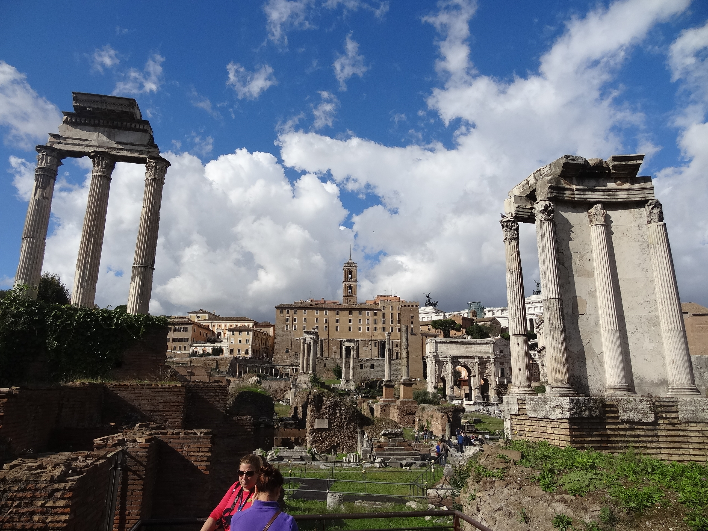
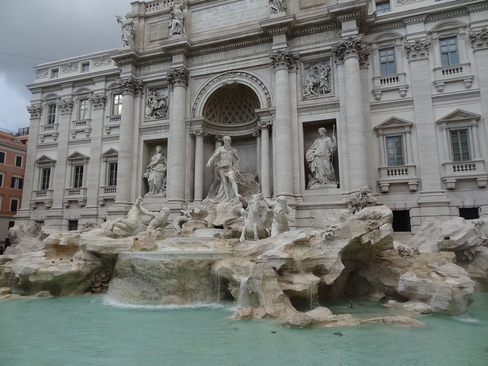
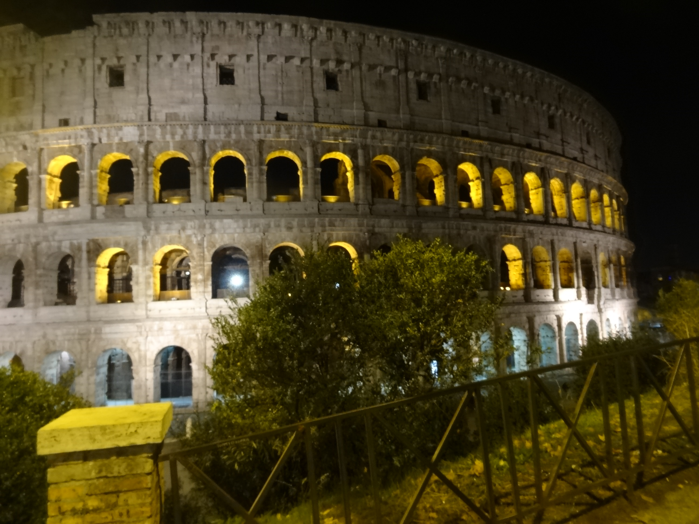
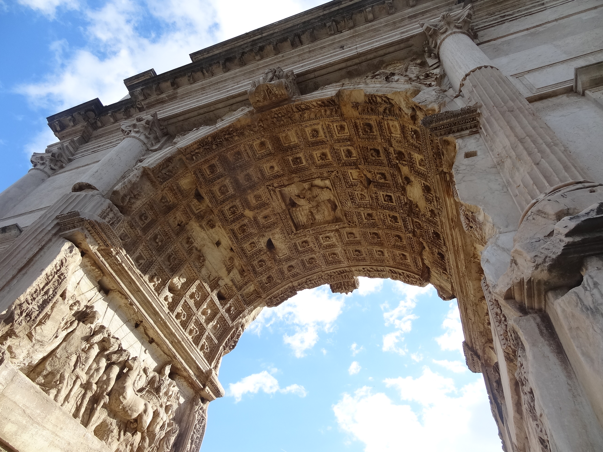

Włochy
Rzym-perła renesansu
5 informacji o Rzymie, które musisz znać:
Zanim podzielę się z Wami typowym poradnikiem dotyczącym podróży, to chciałabym wprowadzić na blogu jeszcze trochę rzymskiego klimatu. Dlatego przygotowałam listę pięciu cennych informacji o tym mieście. Ciekawa jestem, co dodałyby od siebie osoby, które już mają taką wycieczkę za sobą. Czekam na Wasze typy w komentarzach pod notką, a tymczasem dzielę się swoimi:1. Ruch na drodze
Chociaż wydawać by się mogło, że w Rzymie należy się bać śmierci z przejedzenia, to tak naprawdę groźniejsze od węglowodanów zapiekanych z serem są samochody i skutery. A raczej rzymianie, którzy je prowadzą. Dla nich zasady ruchu drogowego nie istnieją – wszyscy się pchają, prześcigają, wciskają i na siebie trąbią. A na dodatek przechodnie co chwilę próbują przeskoczyć jezdnię na czerwonym. O ile w ogóle są światła na pasach, bo często nie ma i naprawdę trzeba odmówić zdrowaśkę przed podjęciem decyzji o wejściu na ulicę.2. Sposób nalewania wina
Najlepszy zwyczaj rzymian – nikt nie pilnuje zasady 1/3 objętości kieliszka. Wino wlewa się po sam brzeg, a turystom często podaje się jeszcze gratisowe lampki i generalnie wszyscy cieszą się życiem.3. Wyluzowani kelnerzy
W związku z zasadą numer 2, nikogo nie powinno dziwić, że kelnerzy w trakcie pracy tańczą, śpiewają, gwiżdżą i prowadzą między sobą bardzo głośne rozmowy. Albo robią samolociki z serwetek. Pamiętam, że pięć lat temu podczas mojego pierwszego wieczoru w Rzymie nagle zaczęła się straszna ulewa. W związku z tym kelner (może to był właściciel, nie pamiętam) stwierdził, że on już ma dość pracy i zamyka lokal. Ponieważ w ogródku w najlepsze bawiłam się ja i dwóch właśnie poznanych przeze mnie Irlandczyków, to zostaliśmy przez niego wyposażeni w worki na śmieci, w których wycięto miejsca na głowę. Zachwycony swoim pomysłem kelner/właściciel pomógł nam się w to ubrać i pokazał, gdzie jest najbliższa knajpa, której na pewno nie zamkną. Zero problemu.4. Najlepsza atrakcja Rzymu
Podaję Wam teraz informację wartą miliony. Nie wiem, z jakiego powodu, ale jest ona pomijana przez większość przewodników.
Otóż każdy, kto jest w Rzymie, musi udać się na Awentyn, a dokładniej na Plac Kawalerów Maltańskich (Piazza dei
Cavalieri di Malta). Wszystko po to, żeby zobaczyć zawsze zamknięte drzwi do ogrodu. I kolejkę ludzi, którzy patrzą
przez dziurkę od klucza znajdująca się w tych drzwiach. Cała zabawa polega na tym, że dokładnie przez tę dziurkę
widać kopułę Bazyliki św. Piotra. Gwarantuję Wam, że to jest najlepszy widok w całym Wiecznym Mieście!
5. Słodycze dla niejadków
Jak wiecie, wolę smaki pikantne i słone od słodkich. Generalnie irytują mnie kraje, w których popularne są słodkie śniadania, bo jestem przyzwyczajona do jajecznicy i pomidorów. Ale nie w Rzymie. Tutaj mogę wcinać rogaliki z czekoladą codziennie, a deser zamawiać po każdym posiłku. Tiramisu i panna cotta śnią mi się po nocach, więc nie odmawiajcie ich sobie. Podobno Włoskie słodycze odchudzają. Ja w to wierzę. I tym pięknym akcentem przechodzę do pokazania Wam kolejnej porcji zdjęć z miasta, w którym kiedyś zamieszkam.



